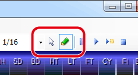

Usage
Select mode and Edit mode
DTXCreator has two modes.
Select mode
(
) ... to select / move sound chips, or to change the bar length, and so on.
Edit mode
(
) ... to arrange sound chips to make DTX score file.
You can change the mode by toolbar or menu bar (Edit menu)
